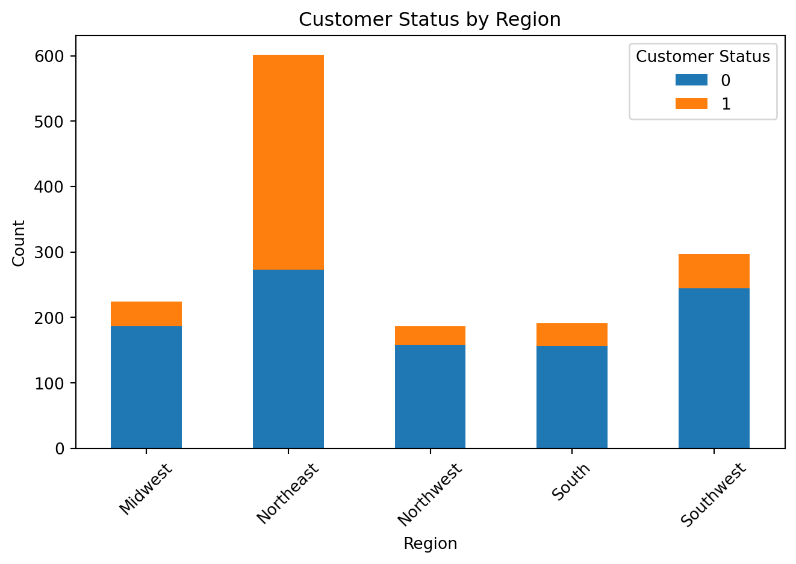
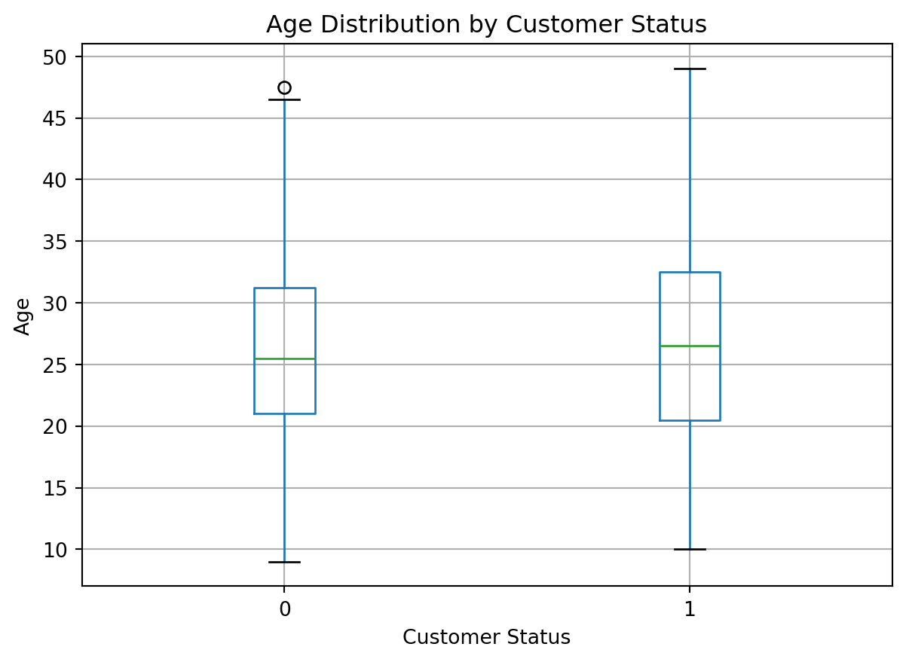

import pandas as pd
blueprinty = pd.read_csv('blueprinty.csv')
blueprinty.head()
patents_num = blueprinty.groupby('iscustomer')['patents'].mean()
patents_num
import seaborn as sns
import matplotlib.pyplot as plt
sns.histplot(data=blueprinty, x='patents', hue='iscustomer', multiple='stack', bins=20)
plt.title('Histogram of Number of Patents by Customer Status')
plt.xlabel('Number of Patents')
plt.ylabel('Count')
plt.show()Poisson Regression Examples
Blueprinty Case Study
Introduction
Blueprinty is a small firm that makes software for developing blueprints specifically for submitting patent applications to the US patent office. Their marketing team would like to make the claim that patent applicants using Blueprinty’s software are more successful in getting their patent applications approved. Ideal data to study such an effect might include the success rate of patent applications before using Blueprinty’s software and after using it. Unfortunately, such data is not available.
However, Blueprinty has collected data on 1,500 mature (non-startup) engineering firms. The data include each firm’s number of patents awarded over the last 5 years, regional location, age since incorporation, and whether or not the firm uses Blueprinty’s software. The marketing team would like to use this data to make the claim that firms using Blueprinty’s software are more successful in getting their patent applications approved.
Data
- The histogram shows that non-customers consistently outnumber customers across patent counts, with most entities, regardless of customer status, tend to hold 3–4 patents.
Blueprinty customers are not selected at random. It may be important to account for systematic differences in the age and regional location of customers vs non-customers.
region_counts = blueprinty.groupby(['iscustomer', 'region']).size().unstack()
#print(region_counts)
region_counts.T.plot(kind='bar', stacked=True)
plt.title('Customer Status by Region')
plt.xlabel('Region')
plt.ylabel('Count')
plt.legend(title='Customer Status')
plt.xticks(rotation=45)
plt.tight_layout()
plt.show()
- The chart shows that the Northeast has the highest overall customer count and a relatively balanced customer-to-non-customer ratio, while all other regions are dominated by non-customers.
import matplotlib.pyplot as plt
blueprinty.boxplot(column='age', by='iscustomer')
plt.title('Age Distribution by Customer Status')
plt.suptitle('')
plt.xlabel('Customer Status')
plt.ylabel('Age')
plt.show()
- The age distribution for customers and non-customers is similar, with both groups centered around the mid-to-late 20s, though customers show slightly higher age variability and a marginally higher median
Estimation of Simple Poisson Model
Since our outcome variable of interest can only be small integer values per a set unit of time, we can use a Poisson density to model the number of patents awarded to each engineering firm over the last 5 years. We start by estimating a simple Poisson model via Maximum Likelihood.
For a random variable \(Y \sim \text{Poisson}(\lambda)\), we consider the probability mass function (PMF):
\[ f(Y \mid \lambda) = \frac{e^{-\lambda} \lambda^Y}{Y!} \]
If we observe independent data points \(Y_1, Y_2, \dots, Y_n\) from a Poisson distribution with the same rate parameter \(\lambda\), then the likelihood function is the product of their individual probabilities:
\[ \mathcal{L}(\lambda; Y_1, \dots, Y_n) = \prod_{i=1}^n \frac{e^{-\lambda} \lambda^{Y_i}}{Y_i!} \]
\[ = e^{-n\lambda} \lambda^{\sum_{i=1}^n Y_i} \prod_{i=1}^n \frac{1}{Y_i!} \]
import numpy as np
from scipy.special import gammaln
def poisson_loglikelihood(lam, Y):
"""
Computes the log-likelihood of Poisson-distributed data.
Parameters:
lam : float
Poisson rate parameter (lambda)
Y : array-like
Observed counts
Returns:
float
Log-likelihood value
"""
Y = np.array(Y)
if lam <= 0:
return -np.inf # log-likelihood undefined for non-positive lambda
loglik = np.sum(-lam + Y * np.log(lam) - gammaln(Y + 1))
return loglikY = blueprinty['patents'].values
lambda_vals = np.linspace(0.1, 10, 200)
loglik_vals = [poisson_loglikelihood(lam, Y) for lam in lambda_vals]
plt.figure(figsize=(8, 5))
plt.plot(lambda_vals, loglik_vals, label='Log-Likelihood')
plt.xlabel('Lambda (λ)')
plt.ylabel('Log-Likelihood')
plt.title('Poisson Log-Likelihood as a Function of λ')
plt.grid(True)
plt.legend()
plt.tight_layout()
plt.show()lambda_mle = Y.mean()
print("MLE of lambda (λ̂):", lambda_mle)MLE of lambda (λ̂): 3.6846666666666668#_todo: Find the MLE by optimizing your likelihood function with optim() in R or sp.optimize() in Python._
import numpy as np
from scipy.optimize import minimize
from scipy.special import gammaln
# Define the negative log-likelihood (for minimization)
def neg_poisson_loglikelihood(lam):
if lam <= 0:
return np.inf
loglik = np.sum(-lam + Y * np.log(lam) - gammaln(Y + 1))
return -loglik
initial_lambda = np.array([1.0])
result = minimize(neg_poisson_loglikelihood, initial_lambda, bounds=[(1e-6, None)])
lambda_mle = result.x[0]
print("MLE of lambda (λ̂) from optimization:", lambda_mle)MLE of lambda (λ̂) from optimization: 3.6846668570379952Estimation of Poisson Regression Model
Next, we extend our simple Poisson model to a Poisson Regression Model such that \(Y_i = \text{Poisson}(\lambda_i)\) where \(\lambda_i = \exp(X_i'\beta)\). The interpretation is that the success rate of patent awards is not constant across all firms (\(\lambda\)) but rather is a function of firm characteristics \(X_i\). Specifically, we will use the covariates age, age squared, region, and whether the firm is a customer of Blueprinty.
import numpy as np
from scipy.special import gammaln
def poisson_regression_loglikelihood(beta, Y, X):
"""
Log-likelihood function for Poisson regression with a log-link.
Parameters:
beta : array-like
Coefficient vector (length p)
Y : array-like
Response vector (length n)
X : array-like
Covariate matrix (n x p)
Returns:
float
Negative log-likelihood (for optimization)
"""
beta = np.array(beta, dtype=float)
Y = np.array(Y, dtype=float)
X = np.array(X, dtype=float)
lambda_i = np.exp(X @ beta) # log-link: lambda_i = exp(X_i * beta)
loglik = np.sum(-lambda_i + Y * np.log(lambda_i) - gammaln(Y + 1))
return -loglik # Return negative log-likelihood for minimization#_todo: Use your function along with R's optim() or Python's sp.optimize() to find the MLE vector and the Hessian of the Poisson model with covariates. Specifically, the first column of X should be all 1's to enable a constant term in the model, and the subsequent columns should be age, age squared, binary variables for all but one of the regions, and the binary customer variable. Use the Hessian to find standard errors of the beta parameter estimates and present a table of coefficients and standard errors._
# import numpy as np
# import pandas as pd
# from scipy.optimize import minimize
# Create age squared
blueprinty['age_squared'] = blueprinty['age'] ** 2
# One-hot encode 'region', excluding one level (reference group)
X_region = pd.get_dummies(blueprinty['region'], drop_first=True)
# Assemble the design matrix X
X = pd.concat([
pd.Series(1, index=blueprinty.index, name='intercept'), # constant term
blueprinty['age'],
blueprinty['age_squared'],
X_region,
blueprinty['iscustomer']
], axis=1)
Y = blueprinty['patents'].values
X = X.values
initial_beta = np.zeros(X.shape[1])
result = minimize(poisson_regression_loglikelihood, initial_beta, args=(Y, X), method='BFGS')
beta_mle = result.x
hessian_inv = result.hess_inv # this is the estimated variance-covariance matrix
from scipy.optimize import minimize
initial_beta = np.zeros(X.shape[1])
result = minimize(poisson_regression_loglikelihood, initial_beta, args=(Y, X), method='BFGS')
# Extract coefficients and standard errors
beta_mle = result.x
hessian_inv = result.hess_inv
se_beta = np.sqrt(np.diag(hessian_inv))
se_beta = np.sqrt(np.diag(hessian_inv))
# Column names in same order as X
column_names = ['intercept', 'age', 'age_squared'] + list(X_region.columns) + ['iscustomer']
results_df = pd.DataFrame({
'Coefficient': beta_mle,
'Std. Error': se_beta
}, index=column_names)
print(results_df)/tmp/ipykernel_46616/51368662.py:24: RuntimeWarning: overflow encountered in exp
lambda_i = np.exp(X @ beta) # log-link: lambda_i = exp(X_i * beta)
/tmp/ipykernel_46616/51368662.py:26: RuntimeWarning: invalid value encountered in multiply
loglik = np.sum(-lambda_i + Y * np.log(lambda_i) - gammaln(Y + 1))
/tmp/ipykernel_46616/51368662.py:26: RuntimeWarning: invalid value encountered in add
loglik = np.sum(-lambda_i + Y * np.log(lambda_i) - gammaln(Y + 1))
/home/jovyan/Desktop/Spring/feature-env/lib/python3.11/site-packages/numpy/_core/fromnumeric.py:86: RuntimeWarning: overflow encountered in reduce
return ufunc.reduce(obj, axis, dtype, out, **passkwargs)
/tmp/ipykernel_46616/51368662.py:24: RuntimeWarning: overflow encountered in exp
lambda_i = np.exp(X @ beta) # log-link: lambda_i = exp(X_i * beta)
/tmp/ipykernel_46616/51368662.py:26: RuntimeWarning: invalid value encountered in multiply
loglik = np.sum(-lambda_i + Y * np.log(lambda_i) - gammaln(Y + 1))
/tmp/ipykernel_46616/51368662.py:26: RuntimeWarning: invalid value encountered in add
loglik = np.sum(-lambda_i + Y * np.log(lambda_i) - gammaln(Y + 1))
/home/jovyan/Desktop/Spring/feature-env/lib/python3.11/site-packages/numpy/_core/fromnumeric.py:86: RuntimeWarning: overflow encountered in reduce
return ufunc.reduce(obj, axis, dtype, out, **passkwargs)
/tmp/ipykernel_46616/51368662.py:24: RuntimeWarning: overflow encountered in exp
lambda_i = np.exp(X @ beta) # log-link: lambda_i = exp(X_i * beta)
/tmp/ipykernel_46616/51368662.py:26: RuntimeWarning: invalid value encountered in multiply
loglik = np.sum(-lambda_i + Y * np.log(lambda_i) - gammaln(Y + 1))
/tmp/ipykernel_46616/51368662.py:26: RuntimeWarning: invalid value encountered in add
loglik = np.sum(-lambda_i + Y * np.log(lambda_i) - gammaln(Y + 1))
/home/jovyan/Desktop/Spring/feature-env/lib/python3.11/site-packages/numpy/_core/fromnumeric.py:86: RuntimeWarning: overflow encountered in reduce
return ufunc.reduce(obj, axis, dtype, out, **passkwargs) Coefficient Std. Error
intercept 1.480059 1.0
age 38.016417 1.0
age_squared 1033.539585 1.0
Northeast 0.640979 1.0
Northwest 0.164288 1.0
South 0.181562 1.0
Southwest 0.295497 1.0
iscustomer 0.553874 1.0/tmp/ipykernel_46616/51368662.py:24: RuntimeWarning: overflow encountered in exp
lambda_i = np.exp(X @ beta) # log-link: lambda_i = exp(X_i * beta)
/tmp/ipykernel_46616/51368662.py:26: RuntimeWarning: invalid value encountered in multiply
loglik = np.sum(-lambda_i + Y * np.log(lambda_i) - gammaln(Y + 1))
/tmp/ipykernel_46616/51368662.py:26: RuntimeWarning: invalid value encountered in add
loglik = np.sum(-lambda_i + Y * np.log(lambda_i) - gammaln(Y + 1))
/home/jovyan/Desktop/Spring/feature-env/lib/python3.11/site-packages/numpy/_core/fromnumeric.py:86: RuntimeWarning: overflow encountered in reduce
return ufunc.reduce(obj, axis, dtype, out, **passkwargs)
/tmp/ipykernel_46616/51368662.py:24: RuntimeWarning: overflow encountered in exp
lambda_i = np.exp(X @ beta) # log-link: lambda_i = exp(X_i * beta)
/tmp/ipykernel_46616/51368662.py:26: RuntimeWarning: invalid value encountered in multiply
loglik = np.sum(-lambda_i + Y * np.log(lambda_i) - gammaln(Y + 1))
/tmp/ipykernel_46616/51368662.py:26: RuntimeWarning: invalid value encountered in add
loglik = np.sum(-lambda_i + Y * np.log(lambda_i) - gammaln(Y + 1))#_todo: Check your results using R's glm() function or Python sm.GLM() function._#_todo: Interpret the results._ #_todo: What do you conclude about the effect of Blueprinty's software on patent success? Because the beta coefficients are not directly interpretable, it may help to create two fake datasets: X_0 and X_1 where X_0 is the X data but with iscustomer=0 for every observation and X_1 is the X data but with iscustomer=1 for every observation. Then, use X_0 and your fitted model to get the vector of predicted number of patents (y_pred_0) for every firm in the dataset, and use X_1 to get Y_pred_1 for every firm. Then subtract y_pred_1 minus y_pred_0 and take the average of that vector of differences._AirBnB Case Study
Introduction
AirBnB is a popular platform for booking short-term rentals. In March 2017, students Annika Awad, Evan Lebo, and Anna Linden scraped of 40,000 Airbnb listings from New York City. The data include the following variables:
#_todo: Assume the number of reviews is a good proxy for the number of bookings. Perform some exploratory data analysis to get a feel for the data, handle or drop observations with missing values on relevant variables, build one or more models (e.g., a poisson regression model for the number of bookings as proxied by the number of reviews), and interpret model coefficients to describe variation in the number of reviews as a function of the variables provided._